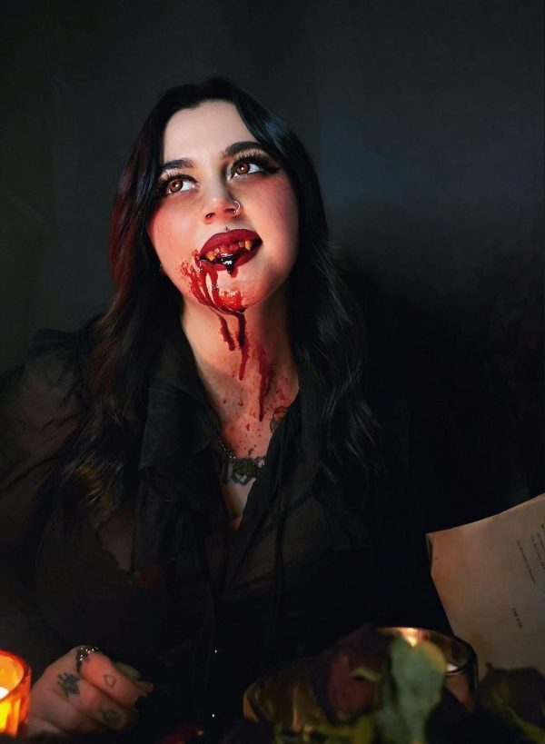

Ellis

This is a personalized short story, based on a real person.
I created this using the information my client has given me. It’s an unique story that builds around her fears.
You can order your own personalized story from the main page. You will receive an e-mail with a document that contains questions and needs to be filled up so I can create your own little story.
Personalized stories can be ordered as physical copy (in this case you will receive by post the story printed on special vintage paper, along with a handwritten note by me, and a few goodies – check the order page for details. You will also receive a pdf and an e.pub file through e-mail). You could also order just the digital copy (in this case you will only get the pdf and e-pub files through e-mail).
Permission has been given to post her story here and use her pictures.
ELLIS
He stumbled upon the Gothic church in one of his exploratory walks with his dog, Charlie. He’d named that dog after the old animation All dogs go to heaven, as if he couldn’t have let go of the trauma the movie had inflicted on him.
Liam was new to the city. He’d moved here just a month ago, happy to had finally get the job of his dreams. But he was alone. His family left behind, his friends scattered all over the country, he felt out of place and often questioned his decision.
He took long walks every night after dinner, his dog sniffing the scents of the city away while Liam tried to commit to his memory all the new discovered places.
When the imposing building came into view, Liam gasped.
Even with collapsed walls and broken windows, the Church stood tall, as if trying to survive the passing of the time and the negligence of the people who had left it behind.
The huge double doors were slightly ajar so Liam, pushed by his never ending curiosity and sense of adventure, climbed the few steps and poked his head through the opening.
But, as he tried to go all the way in, Charlie dug his paws onto the last step and refused to move.
‘Come on, boy. Let’s go see what’s inside’, Liam said as he gently tugged the leash.
But the dog wouldn’t budge.
‘Fine. Have it your way.’ Liam sighed and went to tie him to the nearest tree while mumbling: ‘You know, since you’ve gone old, you’ve started to be grumpy and annoying.’
Charlie grunted as if he understood his friend’s frustrations, then turned around and started sniffing around the tree that he’d been tied to.
Liam turned his attention back on the church and once again climbed the stairs and made his way into the building.
His steps echoed into the stillness and he held his breath for a second, as if not to disturb the sanctity of the place. But it had been a very long time since people filled this space, their heads bowed in prayer. Even with rubble in the corners, broken windows and the stale scent in the air, Liam still found himself in awe of the place.
He was so absorbed in his admiration that at first he didn’t notice the figure behind the altar. Only when a sob reached his ears, Liam snapped out of his trance and looked towards the front of the church.
There, kneeling in front of one of the chairs, there was a woman, her head lowered as if in prayer, her black hair coming down over her shoulders in waves. She was wearing what looked like a long red dress, the fabric tight on her curves. Her body shook and another sob came out of her, barely a whisper.
Liam didn’t want to scare her, but he figured he couldn’t just turn around and leave her in this desolate place. She seemed to be alone, and he wondered if talking to her would do more harm than good. Maybe she wanted to be left alone. Maybe she needed the space and the quiet.
But something wasn’t right.
‘Excuse me, miss… are you alright?’
The woman’s body went still and for a second he regretted opening his mouth.
But then she lifted her head and got up in such a gracious move, that Liam almost let his jaw drop.
She was stunning. She had pale skin and green eyes with long, black lashes. Her lips were full and red. He also noticed that her shinny black hair had a red stripe to the side. How intriguing, he found himself think. The red dress was showing off her perfect hourglass body, hugging her in all the right places. And then she opened her mouth and her voice sang more than talked as she asked:
‘Who are you?’
‘Hi. I’m Liam. Nice to meet you. I heard you cry and thought you needed help, but I realize now I shouldn’t have bothered you. That was very rude of me. And I am talking too much, aren’t I?’ He finally chuckled.
The woman watched him with interest but didn’t say anything.
‘Right. I’m sorry to have disturbed you. Maybe you just wanted to be left alone.’
‘NO!’ She shouted and Liam stepped back, confusion on his face. But then she smiled at him and he found himself looking at her lips a little too long, unable to shift his gaze away.
‘I’m sorry for that. I… would like some company, if that’s alright with you?’ She said.
‘Sounds like a plan’, he answered and forced himself to walk towards her. ‘So, what is this place?’ he asked while he sat down on the front row of the church.
The woman approached him and Liam noticed she was tall, much taller than he initially had thought. She was also wearing heels, but he knew even with that, she still wouldn’t reach his height.
Since he’d been a child, Liam had been bullied because of his slender figure and long legs. But he turned all that rage that had been building inside of him and used it to get better. At thirty-eight he was muscular as a result of a strict gym regime and damn proud of his 6.2 ft.
‘My name is Ellis.’ She said and sat down next to him. ‘And it truly is nice to meet you.’ She offered him her hand, which he took.
‘That’s a lovely name,’ he mumbled.
‘Thank you,’ she chuckled. ‘And… you asked about this place.’ Her arms opened wide, gesturing around. ‘This is a church, obviously.’
Dumbstruck by the joke, Liam only managed to stare at her until she started giggling which made him laugh too. They did that for a while, their faces turning red, little snorts coming out from both of them.
He wiped his eyes and said: ‘I’m sorry for the stupid question.’
‘That’s alright, lovely. I don’t remember the last time I laughed so much and it wasn’t even a good joke.’
Liam looked at her, and seemed to drown in her green eyes. She was the most beautiful woman he had ever seen. And he wondered once again why was she alone in this place and why was she crying when he’d entered the church.
‘Listen… I know it’s none of my business. But…. Were you crying earlier?’
Ellis shifted her gaze towards the altar.
‘I think I was. Although the reason for that seems to be lost on me. How peculiar.’
The silence stretched between them. He wanted to say something, keep the conversation going, but he wasn’t sure what.
Then Charlie started barking and Liam jumped to his feet.
‘Shit. I forgot. I left my dog outside.’
‘Then you should probably go to him. He sounds sad.’ She smiled.
‘I probably should. It was nice meeting you, Ellis,’ he said and instantly regretted it. Nice meeting you? When she had been crying? You moron. But it was true. She seemed really nice and she was hot as fuck. Liam desperately wanted to stay with her for longer. But it was a cold night, the Autumn creeping in finally, and his dog was old. ‘Maybe I’ll see you around sometime?’ he asked.
‘Maybe you will.’ She smiled.
He went to the door and turned around to wave at her.
She waved back.
Outside he hurried to untie the leash but a thought hit him like a brick and he ran back.
‘Hey, do you want me to walk you home?’ He said to the empty church.
Ellis was nowhere to be seen. Could she have left already, maybe through a different door?
Resigned, Liam walked back out, took Charlie’s leash in his left hand and went home.
The next day at work all he could think about was the beautiful dark haired woman from the church. He wanted to know more about her. Who was she? Why was she there alone? Did she want to go out with him maybe one day?
Her body was sensual and his mind kept thinking about how it would feel in his arms, against his chest, under his lips, on his tongue. He couldn’t concentrate on his project for the life of him!
He left work early and took Charlie for his usual walk and this time he headed back straight to the church. Tying the leash to the same tree, he said to his friend: ‘Don’t worry, I won’t be long. Just have to check if she’s in there. And this time you have your sweater on.’
The dog barked in disagreement, but Liam was already climbing the stairs in a rush, excitement coursing through his veins.
He looked around for a couple of minutes, disappointment building up quickly when he realized she wasn’t anywhere to be found.
‘What was I expecting?’ He said out loud as he turned to leave.
‘You were expecting… me, perhaps?’ A smooth voice answered him.
Liam turned around so fast he almost tripped over his own feet.
‘Ellis! You’re here!’
‘It appears so.’ She giggled. ‘I was hoping you’d come around again.’
‘I must have impressed you, then.’
‘I wouldn’t go as far as that. I needed to explain myself to you and hoped for a chance to do it,’ she said, lowering her gaze to the floor. ‘You see…. I was sad. And lonely. I can’t remember exactly why which is disconcerting to say the least, but I know I was feeling hurt. And so alone like there was nobody around to hear me cry, to ask if I’m OK. And then you stumbled on my hiding place. A random stranger who wasn’t supposed to care. But you did, enough to ask if I’m alright. So I want to say thank you for that. It truly helped.’ She looked back up at him, the green of her eyes like crystal piercing through his soul. ‘You must think I’m out of my fucking mind!’ She laughed.
But Liam didn’t think that. He was looking at her face, focused on her full lips, images of him kissing her invading his every thought. He managed to snap out of it, enough to mumble: ‘Not at all, Ellis. I’m just glad to see you’re doing better today.’
She smiled and grabbed his hand. ‘Come, I want to show you something.’
Liam felt the softness of her skin and looked down at her hand intertwined with his, her long dark red nails digging in the back of his hand, but not painfully. He imagined those nails dragging down on his chest, his back, wrapped around his cock.
He shook off the images and tried his best to ignore his growing erection. How fucking pathetic, he thought. Got a hard one from a woman holding my hand. What am I? Fourteen?
Ellis didn’t seem to notice anything and that was a good sign. He followed her behind the altar and through one of the doors to the side. They reached a small room that had a bookcase, a table and two arm chairs and at the other side of it there was another opened door that revealed a staircase going down into darkness, maybe into some sort of a basement.
‘There is a crypt down there, but I’ve been reluctant to check it out by myself. Would you like to go together?’
‘Sure. But maybe let’s wait until tomorrow so I can bring a flashlight. Don’t fancy falling down those stairs and dragging you down with me.’
‘Sounds like a plan,’ she said and let go of his hand. The skin where she had been touching him felt cold now.
Ellis walked slowly to the table and jumped to sit on it. ‘I don’t like those chairs,’ she said as if the wooden table could be somehow much more comfortable.
Liam watched her crossing her legs, the split of her dress revealing a white tattooed leg under. She was wearing heels again, the straps tight around her ankles.
‘Damn, you’re so beautiful.’ He said without thinking.
‘Why thank you so much,’ she giggled. ‘You’re not so bad yourself.’
‘I’m sorry, I don’t want to sound like a creep or make you feel uncomfortable in any way.’ He lifted his hands up and took two steps back. ‘I want you to know you’re safe around me. You don’t know me, but I’m not one of those weirdos.’
‘I know.’ She said. ‘But maybe you’re the one who is not safe with me.’ She offered, without smiling.
Liam started laughing, feeling the tension leaving his body. ‘Well, at least I know I will die a happy man,’ he said.
Ellis jumped down from the table, but the heel of one of her shoes bent and she dropped, falling painfully to her knees.
‘Ouch!’ she cursed.
‘Oh, shit, are you alright?’ Liam was instantly crouched down next to her. ‘Here, let me help you up.’ She grabbed his arm to get up, but hissed in pain.
‘I think I might have twisted it or something like that.’
‘You need to go to a hospital.’ Liam took his phone out, but she covered it with her hand. ‘I will, but give me a few minutes before you call, please. It might pass and I don’t want them sending an ambulance unless absolutely necessary.’
He wasn’t convinced, but nodded and pocketed the phone.
‘It’s cold.’ She shivered. ‘Do you mind if I try to walk holding on to you one more time? The benches in front of the altar are bigger. I might be able to stretch my leg and get off this cold floor.’
‘I could carry you there.’ He offered.
‘Oh, I don’t know about that. I’m not that small.’
‘Nonsense,’ he said and in one swift move he picked her from the floor and got up with her in his arms. Her scent was intoxicating.
‘You’re light as a feather.’ He said to which she giggled.
‘I am not, but you are kind. And apparently strong too.’
‘Would you stop? You are very light. I could lift you easily with one arm, but I don’t want to hurt that ankle of yours. Rest your head on my shoulder.’
She did as she was asked, her hair falling over his arm. He could feel the warmth of her body as he carried her to one of the benches, as she had requested. When he gently put her down, her eyes looked up at him and once again he found himself lost in them.
‘You do a lot of starring, you know,’ she whispered.
He dragged his hands from under her with slow, deliberate movements and sat. ‘Give me your leg,’ he said.
She placed the injured one on his lap and he started pressing the tips of his fingers gently around her ankle. ‘Does it hurt when I do this?’ He asked.
‘No. I think it’s getting better. I can move it around, see? It only hurts if I put pressure on it so let’s just stay here for a little bit.’
‘I still think I need to call an ambulance. I can’t take you. I walked here.’
‘Stop being silly. I’ll be fine. So, tell me about yourself?’
The minutes passed as Liam and Ellis chatted. He told her about his new job, this new city he was still exploring, his dog, Charlie, his life that he had left behind. She listened and nodded, joking from time to time or asking the odd question now and then.
After a while, he gathered his courage and asked: ‘So… is there anyone there that’s waiting for you to go home?’
‘If you mean a husband or a boyfriend… no such thing. I was engaged at one point in my life, but he… left me. Alone.’
‘I’m sorry to hear that. He was an idiot.’
‘We can drink to that.’ She laughed. ‘I think I can walk now.’
He got up and offered her his arm and she grabbed it. Her legs managed to keep her upright and she wasn’t feeling any pain anymore.
‘See? Told you I’ll be alright. Thank you for staying with me.’ She said and placed one kiss on his cheek.
‘You’re welcome,’ he smiled. ‘I’ll walk you home.’
‘In a sec. I need to get my bag. I think I left it in the room back there.’
‘I’ll get it for you.’
‘No, it’s alright. You go and wait for me by the door. Your dog must be missing you.’
‘Charlie is going to like you, you’ll see. Walk slowly and be careful with that weak ankle.’
‘Yes, sir.’ She chuckled.
Liam went outside and untied Charlie. ‘I made a new friend, buddy. Just wait and see.’ He was whistling as he sat down the stairs to wait for her. His dog was sniffing him. ‘You can smell her on me, can’t you, buddy?’ The dog started growling.
‘What’s wrong, Charlie?’ Liam looked around but as far as he could tell there was nobody around. ‘Oh, come on, no need to be so dramatic.’ Then he noticed the two cats that were watching them from the ruined wall of the church.
One was smaller and its fur was completely black, probably a female. The other one was larger, black with a white patch on its neck, and seemed to be a male. They were standing still, their green/yellow eyes focused on Liam and Charlie.
‘Oh, it’s just a bunch of cats. You never minded them, buddy. Don’t see a reason why you should start hating them now that you’re old.’
But the dog’s fur prickled at the base of his neck as his growls intensified and his teeth started showing.
‘What’s wrong, Charlie?’ Liam asked for the second time that evening. But the dog couldn’t speak. It was clearly upset about something, but as far as Liam could tell, there wasn’t anything around except those two cats who weren’t even doing anything. ‘What’s taking her so long?’ He wondered as he pulled the dog’s leash, dragging him up the stairs. ‘Come on, I have to see if she’s alright. She got hurt, buddy.’ He managed to reach the door and poke his head through while his left arm was stretched, holding the leash, because the dog wouldn’t come any closer.
It was quiet inside. Liam called her but no answer came back. Worried that something might have happened to her, he went back outside to tie Charlie to his tree, before he rushed back, searching and calling the woman’s name. He went into the small room but there wasn’t any sign of her. The door to the crypt was closed now and when he tried to pull it open, he noticed it was locked. ‘What the…’ he mumbled. He could have sworn that thing had been open earlier. He had seen the stairs and the darkness.
He went around the abandoned church for a little while, calling Ellis’ name, but with no success. It was as if the woman had vanished.
Charlie’s barks were getting more frantic so eventually Liam knew he had to abandon his search mission and go back out to his friend. He untied him and walked home, his shoulders slumped, wondering where was she, where could she had gone and why did she leave without saying anything.
For the next two weeks, he went back to the church every night, in hopes of seeing her there, but the building was always empty.
Sadness filled his heart. He had really liked her.
Then one night he entered the abandoned building and sat down on the same bench she had been lying on that night he’d last seen her. He looked around and declared out loud: ‘This is the last time I’m here.’
Hands circled around his neck and Liam almost jumped, screaming like a little girl.
‘Babe, you kept coming for me.’ Ellis placed a kiss on his cheek, goosebumps errupting on his skin.
‘Of course I did. I missed you. Where were you?’
‘Here. I’m always here. I’ve been watching you, waiting to see if you really want to meet me.’
Liam got up, circled the bench and grabbed her waist.
‘Meet you? You’re all I could think about, love. You’re in my thoughts day and night, always there, your eyes never leaving me. I thought I was going to loose my mind if I never saw you again. And yes, I know this sounds cheesy as fuck.’
‘Would you shut up and kiss me already?’ She smiled.
And then his mouth was on hers, gentle at first, his hands tightening around her waist, then her lips parted slowly and he took the invitation to invade her hungrily. She tasted sweet, like cherries and vanilla. Her tongue was soft and moved expertly in his mouth, dancing in rhythm with his. His left hand went up on her back, pulling her close to his body, while his right one cupped her face, feeling her soft skin. She moaned a little bit and he groaned. The kiss lasted a long time, neither of them wanting to stop.
When they finally did, their breaths were ragged as if they’d ran a marathon.
After that it looked like their fates were sealed together. They kept meeting in the abandoned building night after night, talking and kissing, until one faithful evening when they ended up desecrating the church as he picked her up, placed her on the altar table and entered her, screams of pleasure roaming the once holy building.
He asked her to go on a date, maybe eat something in a restaurant, see a movie, come over to his place. She always refused. He was happy to take whatever she would offer so he never complained. But he did wonder what made her so reluctant to see him in other places.
A few months passed before she finally opened up to him and told him her story.
It’s been years since she had last been in love, her engagement the happiest moment of her life. Her soon to be husband had been a handsome man that showered her with attention. It had been perfect, right until the moment he left her right here, in this church, on their wedding day. The pain had overwhelmed her, the loss so abrupt that it had cut a hole in her soul. She’d been alone for so long until she finally met Liam. She said he’d brought a smile on her face again, made her feel wanted, desired, important.
He listened to her story, wiping away at her tears when they came, kissing her softly when she was finished, whispering how she’ll never feel that loneliness ever again. He’d never hurt her like that, he said.
And then he did.
One night, he simply didn’t come. And then when he did visit the next one, he looked different. He averted her eyes, ashamed maybe, he fidgeted with his own fingers and pulled back when she tried to touch him.
‘What’s wrong, my love?’ She asked, panic stricken, as if she already knew what he was going to say.
‘I… met someone.’ He said and the words cut through her heart, splitting it right in two. ‘She is a new intern at my job. Ellis… I’m sorry, but you never want to go somewhere else. We just meet here. For months, I accepted this because it meant I got to see you, but it’s getting…. boring. I want to go out, see a movie, have some drinks, have sex in a bed for once! It’s clear to me you don’t want that.’ He looked up at her finally and noticed she was crying.
‘You think I don’t want to do all those things with you?’ She said. ‘It’s not for a lack of want. I CAN’T!’ she screamed.
Her green eyes turned red and Liam took a step back, not fully understanding where this rage was coming from. He’d never seen her like that.
‘You want to leave me alone just like he did.’ She said in a quiet voice.
‘No, that’s not… I’m not like him.’
‘You are EXACTLY like him.’ She said and her already long nails elongated even more, the pointy ends dangerously sharp. ‘You took my love, my body, trampled all over my emotions when I opened up to you.’ She took a few steps towards him, her heels clicking on the stone, her tears drying on her beautiful face.
A bark came from outside, followed by some screeching. Charlie.
Liam looked towards the door instinctively.
Ellis placed her hands on his chest and pushed him hard until his back hit the wall behind him. She was taller now, her face looking down at him.
‘How did you…?’ He gasped.
Ellis just stared at him, the light of the moon coming in through the broken ceiling and landing on her porcelain chest, illuminating her tattoo. Divine was spelled there in ink and Liam couldn’t agree more. She was absolutely divine. A goddess.
‘You know….,’ she smiled and Liam could see now that her canines were longer than average and they were also very sharp. ‘…my lover turned me right here in this Church. He promised we will be together forever. And then he left. And I had to stay here alone for months. Crying every night. Hiding in the crypt every day. I cannot leave this wretched place as he has not given me permission. That is the thing with masters.’ She parted her lips even more and her tongue danced around between them, mesmerizing him. ‘They can tell you what to do and you have no choice but to obey.’ She put his hands around his neck.
‘What do you mean?’ He asked, clearly not understanding anything.
‘I mean that you’ll never leave me alone. You will have to obey your master. Me. You will stay in this Church with me forever and you will love me as I ask you to do it. You will listen to every word I say.’
‘Is this a game?’ He tried smiling, unsure how to react, but feeling very uncomfortable all of a sudden.
‘No, love. This is not a game.’ She melted her body onto his and put her lips on his neck. ‘You want this,’ she whispered. Her hands grabbed the back of his neck as she started placing kisses along his jawline, his collarbone, around his neck.
Liam moaned, feeling himself getting hard against her body. ‘I want this.’ He was in a trance. She felt so good. His arms circled her waist as he pulled her even closer to him.
‘Yes, just like that’ she gasped.
And then her right hand used its claws to dig deep into his chest and grab onto his heart. He felt her squeezing it, but he let her do it. Willingly. I’d die happy, he’d said that first night when he’d met her a few months ago. Now he felt exactly like that.
When her teeth pierced through the skin of his neck, Liam’s sense of self preservation finally kicked in. He tried pushing her away, but it was too late. Her claws were hooked into him, one around his heart and the other behind his neck, her sharp nails keeping him in place. He felt no pain.
And as he noticed his consciousness leaving his body, Ellis placed him down on the cold stone, her smile full of his blood.
He rasped and managed to say one word: ‘Charlie?’
‘Oh, don’t worry about your dog. Luna and Toby are playing with him.’
And then there was blackness.
THE END
Comments